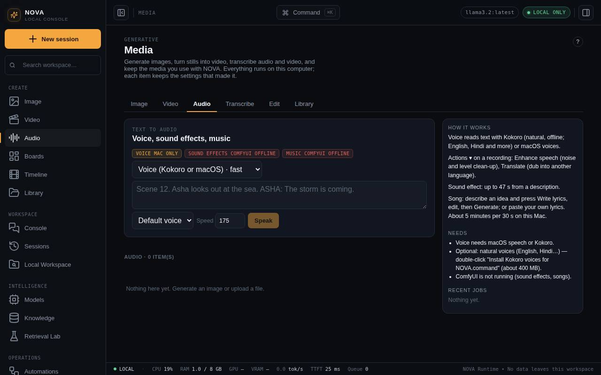
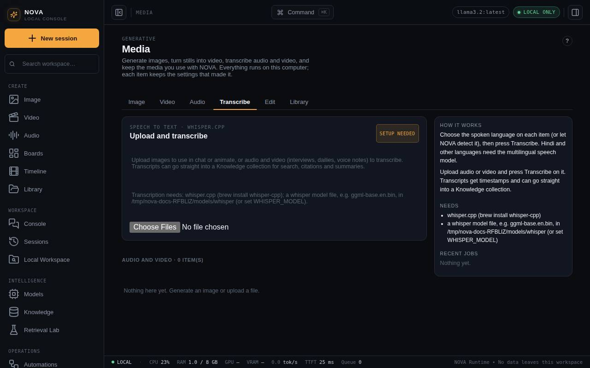

Audio, songs and transcripts
Voices, sound effects, music and songs in Hindi and other languages, transcripts with whisper.cpp, translation and dubbing, and speech clean-up.

Voice
Voice reads text aloud. It is instant and good for scratch voice-over.
- With Kokoro installed (double-click Install Kokoro voices for NOVA.command, about 400 MB), Kokoro voices appear first. They sound far more natural and include English (US and UK), Hindi and several other languages.
- Otherwise NOVA uses the voices installed on your Mac. Add more, including Hindi, in System Settings > Accessibility > Spoken Content > System voice > Manage Voices.
Sound effects and music
Both run in ComfyUI and need Add audio models.command (about 13 GB).
- Sound effect uses Stable Audio Open, up to 47 seconds ("monsoon rain on a tin roof, distant thunder").
- Music uses ACE-Step: style tags plus optional lyrics, up to 4 minutes. It needs macOS 15.1 or later.
Songs
- Choose Song / music, describe the idea (a story, scene or feeling), pick the lyrics language (English, Hindi in Roman or Devanagari letters, Hinglish, Punjabi, Urdu) and a length.
- Press Write lyrics. Your local model writes a title, a style line and [verse]/[chorus]/[bridge] lyrics.
- Edit anything, then Generate. ACE-Step sings it. To sing your own words, paste them in the Lyrics box instead.
Engines. NOVA sings with ACE-Step 1.5 (turbo) or ACE-Step 1. With 1.5 installed (Add ACE-Step 1.5.command, about 10 GB) it is the default; pick the other in Engine. 1.5 also sets the sung language, BPM and key. Compare 1 vs 1.5 makes the same song with both engines so you can listen side by side. In tests on an 18 GB M3 Pro, 1.5 was about twice as fast, but ACE-Step 1 sang the words more clearly; try 1.5 for drafts and instrumentals, and 1 when the words matter.
Transcripts
- Install
brew install whisper-cpp ffmpeg. If ffmpeg will not install, NOVA uses macOS'safconvertfor WAV, AIFF, MP3, M4A and FLAC. - Put a model such as
ggml-base.en.bininnova-console/data/models/whisper, or setWHISPER_MODEL. For Hindi, Urdu, Punjabi, Tamil and other languages, double-click Add multilingual speech model.command (whisper large-v3-turbo, about 575 MB). - Upload audio (WAV, MP3, M4A, OGG, FLAC, WebM) or video (MP4, MOV), choose the spoken language or Detect, choose a Knowledge collection if you want the transcript searchable, and press Transcribe.
Transcripts carry timestamps like [00:01:02]. NOVA uses the English model for English (faster) and the multilingual model for everything else.

Translate, dub and subtitle
Translate… on an audio or video item transcribes the speech, translates each line with your local model, then either dubs it (each line spoken in the new language when the original line starts, over the original sound turned down or off) or, for video, adds subtitles. Subtitles are burned into the picture when your ffmpeg has libass; otherwise they are a track you switch on in the player. The translated .srt is kept in the recipe. There is no lip sync, and long lines are sped up (at most 1.6×) to fit.
Clean up speech
Enhance speech… removes rumble and hiss, reduces noise, compresses gently and levels loudness to −16 LUFS. Light keeps the room sound; Strong is for noisy location sound. On video only the sound is redone.